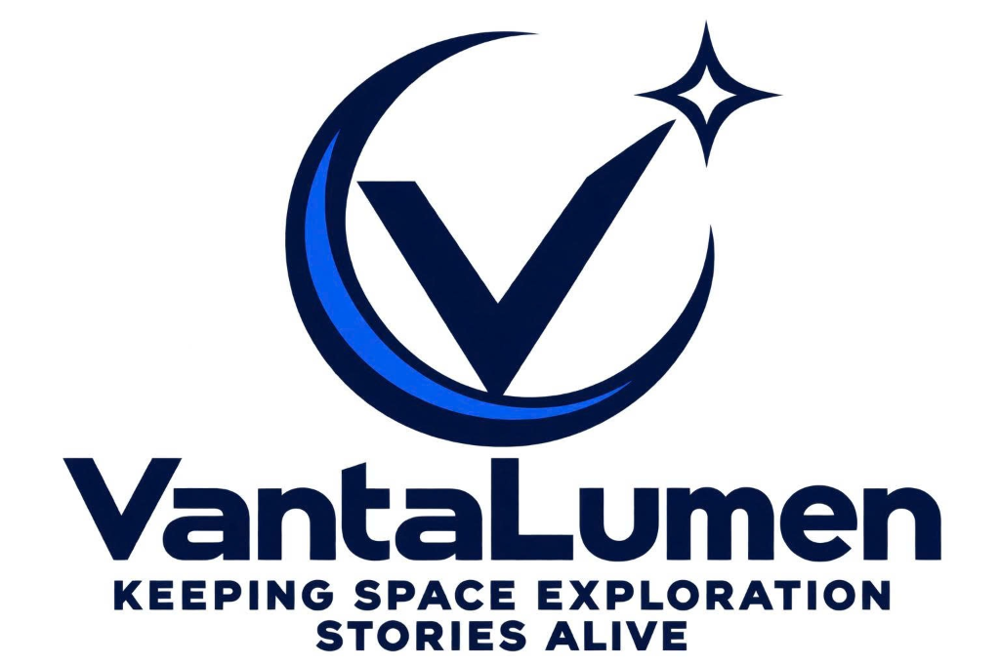

Sáu thiết bị vũ trụ bị bỏ lại nhưng chưa bao giờ bị lãng quên
Mỗi thiết bị có một thao tác vật lý riêng — chọn tab bên dưới để xem chi tiết từng màn
Từ bóng tối sâu thẳm của bụi vũ trụ (`Vanta`) đến ánh sáng hổ phách của ký ức con người (`Lumen`)
Đề bài yêu cầu truyền tải kiến thức về phần cứng vũ trụ và những khám phá khoa học cho học sinh theo cách cuốn hút nhất. Thay vì một bảo tàng chữ khô khan, Vantalumen đặt người chơi vào đúng thao tác vật lý của thiết bị trong 20–35 giây hoàn toàn không lời:
Tên nhóm Vantalumen chính là bảng màu chủ đạo của toàn bộ vũ trụ: